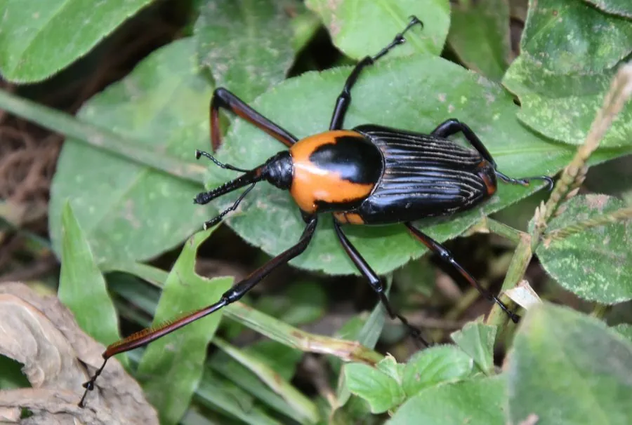

昆虫 · 动物界
竹象鼻虫 Cyrtotrachelus buqueti

中国南方竹林中的大型象甲，吻部细长像象鼻，幼虫蛀食竹笋内部，是竹林的常见害虫，成虫可煎炸食用。
- 分类
- 门节肢动物门纲昆虫纲目鞘翅目科象甲科属竹象属
- 栖息环境
- 中国南方的毛竹林、慈竹林与竹丛
- 地理分布
- 中国南方竹区及东南亚部分地区
- 保护级别
- IUCN 暂无评估；中国未列入国家重点保护名录
物种志
竹象鼻虫体长 2.5–4 厘米，通体呈红褐色或黄褐色，体表有细毛，最显著的特征是头部前方延伸出一条细长的“象鼻状”吻部，雄虫的吻部较短、雌虫的较长；鞘翅上有纵向的刻点与凹槽，足粗壮，善于在竹竿上攀爬。
它分布于中国南方以及东南亚的竹林，栖息于毛竹、慈竹等竹林中，成虫在竹笋上取食并产卵，幼虫孵化后蛀入竹笋内部取食，造成竹笋空心、枯萎，是竹林的常见害虫。它一年发生 1 代，成虫多在夏季羽化，幼虫在笋内发育后化蛹。竹象鼻虫在一些地区被视为野味，幼虫或成虫经煎炸后食用；防治上可采取人工捕捉、清理被害笋和加强竹林管理等措施，目前未被列入国家重点保护名录。
形态与习性
- 食性成虫取食竹笋，幼虫蛀食竹笋内部
- 体长2.5–4 cm
- 寿命成虫约 2–3 个月，一年 1 代
- 繁殖雌虫在竹笋上产卵，幼虫蛀入笋内化蛹
- 活动节律昼行性，夏季活动频繁
- 危害幼虫蛀食竹笋，造成竹笋空心枯萎
趣味知识
- 竹象鼻虫头部有一条细长的“象鼻”状吻部，是它最醒目的特征。
- 它的幼虫在竹笋内部蛀食，被危害的竹笋会空心、枯萎。
- 在部分地区竹象鼻虫被当作野味，经煎炸后食用，但不应过量捕捉。